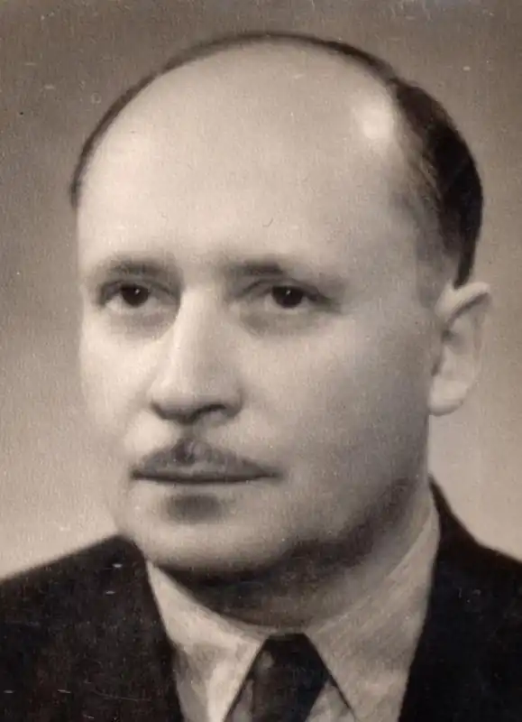

Народився 27 лютого 1910 року у селі Осій,Іршавського району, Закарпатської області.
У 1930 році закінчив Берегівську гімназію. Цього ж року вступив на філософський факультет Карлового університету в Празі. Після закінчення вчителює в закарпатських селах Білках і Великому Бичкові. У березні 1937 року мобілізований до чехословацької армії. Коли Третій Рейхокупував Чехословаччину, працює бібліотекарем у м. Брно, бере участь у складанні етнографічного атласу Угорщини. Відтак переїжджає до рідного краю і співпрацює із Підкарпатським товариством наук (1940-1944 рр.). У травні 1944 році окупаційна влада мобілізує Федора Потушняка до угорської армії, однак у серпні він здається в полон. Після повернення у березні 1945 року з табору під Івано-Франківськом працює в газеті Народної ради Закарпатської України "Закарпатська Україна", пізніше — в газеті "Закарпатська правда".
З 1946 року працює в Ужгородському державному університеті викладачем загальної історії. У 1947 році Федір Потушняк проходив курси підвищення кваліфікації педагогічних кадрів на кафедрах археології й етнографії Московського університету. 5 червня 1947 року Федору Потушнякові було присвоєно вчене звання доцента кафедри археології й етнографії. Викладає археологію, історію, чеську і словацьку мови, проводить активну громадську та культурну роботу. Систематично самостійно чи із студентами виїжджає у кількамісячні експедиції для вивчення рідного краю, на розкопки тощо. Пише і публікує розвідки з етнографії, фольклористики, діалектології, філософські статті. Зокрема у галузі етнографії увагу дослідника привертали різноманітні народні вірування про предмети, речі, осіб тощо. У результаті науково-дослідницької роботи Ф. Потушняк написав понад тридцяти статей про народні вірування закарпатців в сонце, місяць, зірки, вогонь, воду, душу, у відьом, у скарби, їжу ("Огонь в народних віруваннях" (1941), "Вода, земля і воздух в народнім віруванні (1942). Початок його літературної діяльності припадає на другу половину 20-х рр. Перші поезії Потушняка друкувалися в журналах "Пчôлка", "Наш рідний край", "Підкарпатська Русь", "Говерла", в "Студентському альманасі" та ін. А перша збірка поезій "Далекі вогні" вийшла у 1934 року. Федір Потушняк — автор поезій, поезій у прозі, романів, оповідань, п'єс. За словами самого письменника, його мета як поета – "побачити свій світ в калейдоскопі вселюдської поетичної культури … добитися власного поетичного виразу … та притім не втратити контакт зі своїм ґрунтом".Його творчість є виразно модерністською. Дослідники відзначали риси символізму, імпресіонізму, сюрреалізму тощо, що не вписувалось в програму соцреалізму й спровокувало тиск на життя Федора Потушняка. Потушняк-прозаїк поєднав традиційне реалістичне письмо з письмом новітнім, позначеним синтезом народної міфології, вірувань та звичаєвості з неоромантичним демократизмом і лаконічністю вислову, ритмічністю густої образності текстів, властивою імажинізму, психоаналітичним заглибленням у феномен людського духу. На академічному рівні поетику автора розглянула доктор філологічних наук Лідія Голомб у монографії "Поетична творчість Федора Потушняка" (Ужгород, 2001). Автор працював у галузі художнього перекладу з англійської, італійської, німецької, польської, угорської, французької мов. Помер Федір Потушняк 12 лютого 1960 р.